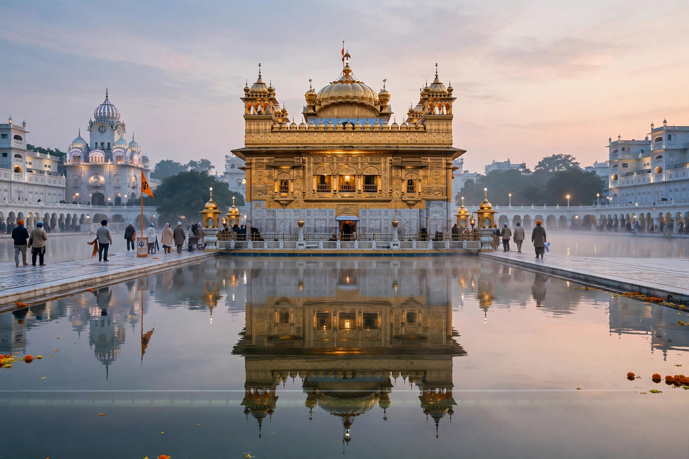

| Country | India |
|---|---|
| Capital | Chandigarh (shared with Haryana) |
| Largest city | Ludhiana |
| Area | 50,362 km² |
| Population (2011) | 27.7 million |
| Official language | Punjabi (Gurmukhi script) |
| Major religions | Sikhism (~58%), Hinduism (~38%) |
| Formation | 1 November 1966 (present boundaries) |

Punjab (Punjabi: ਪੰਜਾਬ, "land of five waters") is a state in northern India, comprising the eastern part of the historic Punjab region, which was divided between India and Pakistan at the Partition of 1947. It borders the Pakistani province of Punjab to the west, Jammu and Kashmir to the north, Himachal Pradesh to the northeast, Haryana to the south and Rajasthan to the southwest. Its population is majority Sikh — India is home to most of the world's Sikhs — and Punjab is the spiritual and cultural heartland of Sikhism.
The region was part of the Indus Valley Civilisation and later of successive empires. Guru Nanak founded Sikhism here in the 15th century; under Maharaja Ranjit Singh the Sikh Empire (1799–1849) made Lahore its capital before British annexation. Partition in 1947 brought mass migrations and violence. In 1966 the Indian Punjab was reorganised on linguistic lines, creating Haryana and transferring hill areas to Himachal Pradesh, and leaving Chandigarh a shared capital and union territory. From the late 1970s to the mid-1990s the state experienced the Punjab insurgency, a separatist militancy associated with the Khalistan movement, including Operation Blue Star (1984) and the assassination of Prime Minister Indira Gandhi.
Punjab is one of India's most prosperous agricultural states, a leader of the Green Revolution: intensive irrigation and wheat and rice cultivation made it the country's "granary", contributing a large share of the central food-grain pool. Ludhiana is an industrial hub for textiles, bicycles and machine tools. A large diaspora, especially in Canada, the UK and the US, sustains significant remittances.
Punjabi culture is known for bhangra music and dance, its cuisine (butter chicken, sarson da saag, lassi), and Amritsar's Golden Temple, whose langar serves free meals to tens of thousands daily.